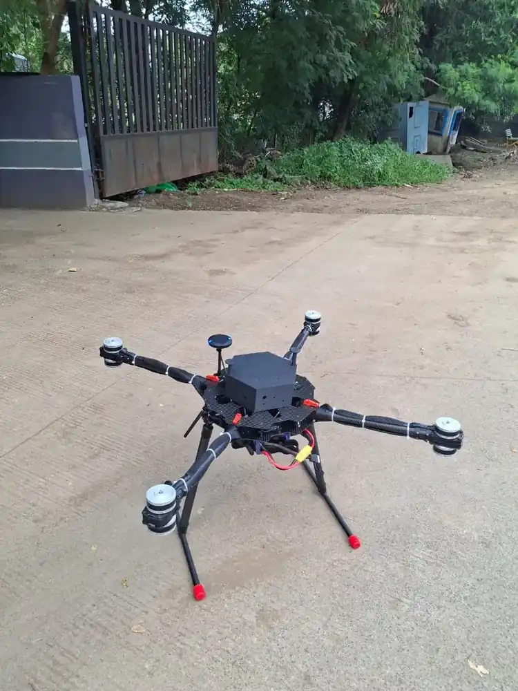

Home / Problems We Solve / Relying on imported drones
Self-relianceMade in India drones vs imported drones: avoid waiting overseas
When spares, support and design decisions sit overseas, a grounded drone can stay grounded.
Defence and government buyers and organisations relying on imported fleets.
Aircraft stay grounded while spares, support and changes wait overseas.
An Indian manufacturer with local spares and direct access to its engineers.
What are the risks of relying on imported drones?
A drone is only useful while it flies. If the parts, the engineers and the design decisions are in another country, every fault and every change request becomes a long wait.
A drone is only useful while it flies. When spares, engineers and design decisions sit in another country, each fault or change request can become a long wait.
For defence and government buyers, the supply chain and data handling matter too. An Indian manufacturer shortens the distance between the people flying the aircraft and those who built it.
Who faces this problem
Defence and government buyers
Many are asked to favour indigenous equipment.
Operators of imported fleets
Delays can leave aircraft out of service.
Organisations with sensitive data
Knowing who built and supports the system matters.
Signs you have this problem
- Aircraft stay grounded while you wait for spares
- Support runs through a distributor, not the maker
- You need changes the supplier will not make
- Your organisation is asked to favour indigenous equipment
What to look for
- Locally sourced spares
- Direct access to the engineering team
- The ability to customise for your mission
- A procurement route such as GeM for government buyers
The main causes
Supply chains
Parts from overseas depend on shipping, stock and export conditions.
Support
Faults may wait on engineers in other time zones.
Customisation
Changes for Indian missions compete with the maker’s own priorities.
Before and after
How to solve it, step by step
- 1
Design
Airframes are designed in Pune.
- 2
Integrate
Flight control and payloads are integrated in-house.
- 3
Test
Platforms are tested before delivery.
- 4
Support
Spares and engineers stay in India.
Common mistakes
- Comparing purchase price and ignoring the cost of downtime
- Assuming that a local reseller means local support
- Failing to ask where spares actually come from
- Accepting that a design can never be changed
Questions to ask a supplier
- Where are spares held, and how quickly can they arrive?
- Can we speak directly to the engineering team?
- Can the design be changed for our mission?
- Who controls software updates and our data?
What to use
Common questions
Are Decouvertes drones made in India?
Yes. The airframes, flight systems, data links and ground software are developed and integrated in India, with locally sourced spares.
Can you customise a drone for us?
Yes. See our Custom UAV Development page, which covers design, airframe, flight control and payload integration.
Can government buyers purchase directly?
Yes. Decouvertes is a Registered OEM on the Government e-Marketplace (GeM).
What does indigenous mean for a drone?
It generally refers to design and manufacture in India, though rules on indigenous content can be specific. Your procurement team should confirm what applies to you.
What should I check when moving away from imported drones?
Compare mission performance, spares, support, training and data handling, then run a trial on your real missions.
Related problems
No standard drone fits your mission
Off-the-shelf drones are built for common needs, so unusual payloads, ranges and conditions can leave you stuck.
Read this guideBuying drones for government
Government buyers must follow procurement rules and also find a drone that meets the actual mission.
Read this guideCostly crashes while learning
New operators need hours in the air, but mission-grade aircraft are not the place to make beginner mistakes.
Read this guideFacing this problem?
Tell us about your mission and our engineers will suggest the right platform or configuration.